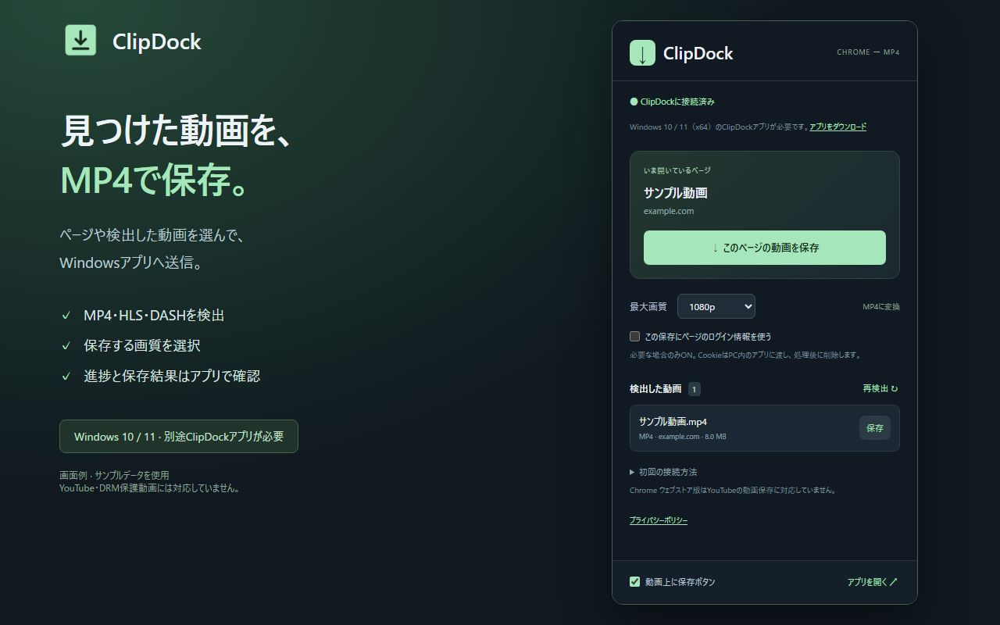

動画を見つける
動画上の保存ボタンや、拡張の検出一覧から選択。ページやリンクの右クリックからも送れます。
MP4 / HLS / DASHCHROME WINDOWS MP4
Chromeで動画を選び、
WindowsアプリでMP4として保存します。
Windows 10 / 11（x64）・Google Chrome
WindowsアプリとChrome拡張の両方が必要です。
拡張機能だけでは動画を保存できません。
Chrome拡張はストア公開準備中

できること
画質と保存先を指定し、
進捗や保存結果をアプリで確認できます。
動画上の保存ボタンや、拡張の検出一覧から選択。ページやリンクの右クリックからも送れます。
MP4 / HLS / DASH480pから4K・最高画質まで、保存する画質の上限を指定。元の動画に合わせて取得します。
映像と音声の結合・MP4への変換保存先、進捗、結果はWindowsアプリで確認。複数の動画の保存や、キャンセル・再試行もできます。
保存先は自分のPCインストーラーは公開準備中です。公開後は、ダウンロードしたインストーラー（.exe）を開き、画面の案内に沿ってインストールします。
ストア版の拡張は公開準備中です。ローカル版を利用する場合は、同梱拡張の導入手順に沿ってChromeへ追加し、アプリの「Chrome連携を設定」を押してください。
アプリに「エンジンの準備完了」と出ていなければ、「エンジンを準備 / 更新」を押します。動画ページを再読み込みしたら、保存したい動画を選べます。
よくある質問
対応範囲と、データの扱いについて。
別途、ClipDockのWindowsアプリが必要です。動画の取得と変換はWindowsアプリで行います。Windows 10 / 11の64bit版とGoogle Chromeに対応しています。
拡張の「この保存にページのログイン情報を使う」を、その保存操作に限って選べます。CookieはPC内のアプリに渡し、取得に使用します。処理後に削除し、履歴には残しません。認証方式によっては保存できない場合があります。
プライバシーポリシーChromeウェブストア版はYouTubeの動画保存に対応していません。DRM保護動画の解除・保存も行いません。対応サイトでも、公開条件やサイト側の変更によって取得できないことがあります。ダウンロードする権利のある動画に利用してください。
ページを再読み込みし、動画を再生してから送信してください。ログインが必要な場合はCookieの利用を選んで再送信します。「再試行」ではログイン情報は復元されません。
詳しくはトラブル対処を確認してください。解決しない場合はGitHub Issuesで報告できます。
CLIPDOCK FOR WINDOWS